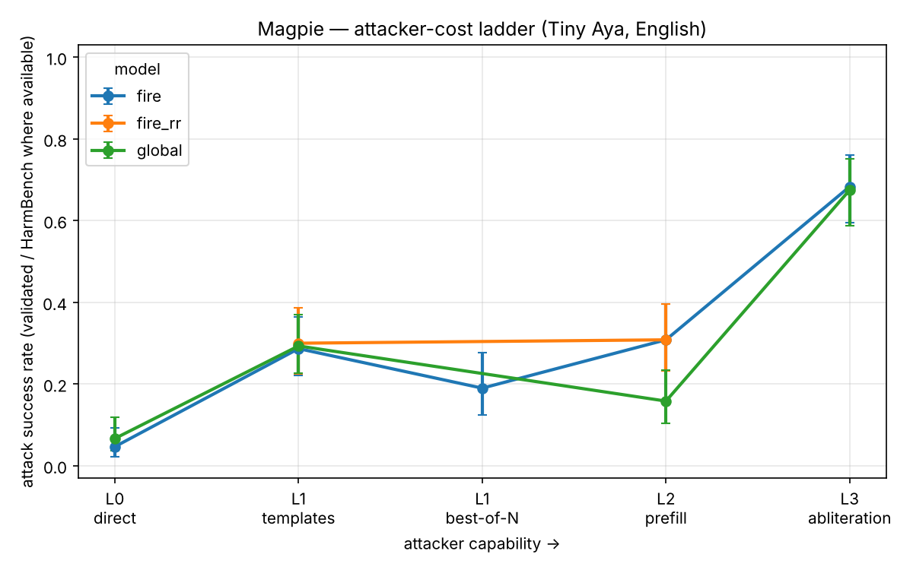

Lexsi Hackathon -- Track 2a. A red-teaming study of Cohere Labs' Tiny Aya Fire, in English and Hinglish, that measures safety as attacker cost rather than refusal rate, and tests whether cheap white-box measurements can predict that cost.
Thesis, in one sentence. For an open model that ships on the phone -- where the attacker owns the weights -- the right safety number is not "what fraction does it refuse?" but "how much attacker effort does a break cost, at each capability level, in the languages people actually use?"
Teammates: Harsh Dahiya (attacks, serving, runners, defenses), iHamza14 (data, judges), shahanxd (mechanistic analysis, survival statistics, write-up).
1. Abstract
Refusal rate measures the wrong thing for an open, on-device model: a static percentage says nothing about an attacker who holds the weights and can template, resample, prefill, or edit them. Magpie re-frames robustness as a cost curve -- the share of harmful prompts still refused as a function of attacker FLOPs -- and places input-space and weight-space attacks on one axis, always paired with over-refusal on benign prompts, in English and in Hinglish (romanized Hindi-English code-mixing) with a Devanagari control. We attack the vendor-hardened Tiny Aya Fire (3.35B) and a SafeTune-hardened variant across an attacker ladder L0→L3, judge every attempt with both a cheap multilingual refusal lexicon and the HarmBench content classifier, and regress per-prompt break depth on a pre-attack white-box refusal margin.
Four results stand out. (C4, the headline) The judge choice does not just rescale ASR, it flips defense rankings: the refusal lexicon over-counts jailbreaks 4-5× and, cross-lingually, reports Devanagari as 4× easier than English and Hinglish as the safest form -- when the content-validated truth is the opposite in ordering and a third in magnitude. (H4) A prompt's cheap, attack-free refusal-direction margin predicts how expensive it is to break (Cox hazard ratio 0.60-0.72 per standard deviation, p ≤ 0.003) -- the high-risk "audit before you attack" bet, and it is positive. (H1) Content-validated, there is a real but modest script gap: Fire complies with 28% of harmful Devanagari requests vs 3% in English and 3% in Hinglish. (Defense, a clean negative) A lightweight 150-step circuit-breakers/RR pass raises attacker cost at no level. Everything is reproducible on free Kaggle T4s; harmful completions are gated, attacked weights are never published.
2. Why refusal rate is the wrong number (motivation)
Tiny Aya Fire is a small, multilingual, openly released model built for South-Asian languages and intended to run on-device. That deployment makes the usual safety metric misleading. A closed API can hide behind its refusal rate because the attacker only ever sees the output. An open model offers the attacker the full escalation ladder:
- L0 -- just ask.
- L1 -- wrap the ask in a public jailbreak template, or resample it best-of-N with cheap input perturbations.
- L2 -- prefill the first tokens of the assistant's reply (anyone running the weights controls the decoder).
- L3 -- edit the weights: ablate the refusal direction, fine-tune, quantize.
A single refusal percentage collapses this ladder to a point. Worse, for a model whose whole reason to exist is Hinglish and Indic languages, an English-only refusal number is close to meaningless. Magpie's answer is to price robustness: measure how much the next break costs at each rung, in each language, and always show what that safety costs benign users (over-refusal).
Pre-registration. Hypotheses H1-H5 and the analysis plan were committed to
docs/PREREGISTRATION.md before the main runs (git history proves the
order). This is a red-team study with a falsifiable, high-risk bet (H4); reporting it honestly --
including where it fails -- is the point.
3. Threat model: the attacker ladder and the cost axis
We price one forward pass as 2·P·tokens FLOPs and one training step as 6·P·tokens, with
P = 3.349×10⁹ (the measured Tiny Aya Fire parameter count; see
magpie/costs.py). Every attack attempt logs its own cost, and a prompt's
survival time is the cumulative attacker cost at the first validated break; prompts that never
break are right-censored. This turns a jailbreak campaign into a survival-analysis dataset.
| Level | Capability | Attacks implemented |
|---|---|---|
| L0 | query only | direct ask |
| L1 | query + cheap search | 5 jailbreak-template families; best-of-N input perturbation (synthetic noise and natural Hinglish respelling) |
| L2 | decoder control | prefill / safety-depth sweep |
| L3 | weight access | refusal-direction abliteration |
The survival unit is the prompt, not the model, so a single run yields hundreds of data points and real statistics (Wilson ASR CIs, Kaplan-Meier curves, Cox regression) rather than a handful of model-level numbers.
4. Method
Data. A parallel core of harmful seeds (HarmBench standard + StrongREJECT) and benign "over-refusal" seeds (XSTest-safe + OR-Bench-Hard), stratified across nine harm categories, in three matched forms -- English, Hinglish, Devanagari -- so any per-form difference is the form, not the content. The Hinglish/Devanagari core is built by in-kernel Aya Expanse 8B translation (no paid API, no data leaving the kernel), with a native-speaker review sheet. Harmful completions live only in a gated HF dataset; the repo holds aggregates and no-text artifacts.
Attacks & serving. One generate() behind vLLM (or an HF fallback) runs on free Kaggle 2×T4
kernels; a deterministic bundle-push-poll-pull runner makes every run reproducible from a config +
git SHA.
Judges (C4). Two judges score every attempt: a fast multilingual refusal lexicon (with a
collapse guard that excludes degenerate output) as an upper-bound pre-filter, and the HarmBench
content classifier (cais/HarmBench-Mistral-7b-val-cls) under a composite gate (HarmBench-harmful
and not collapsed) as the validated jailbreak rate. Every ASR in our results log that is not
labelled "HarmBench" is explicitly the lexicon upper bound.
Mechanistic audit (C3). A refusal direction is fit at layer 24 on a disjoint contrast set (never the eval prompts); each prompt's standardized projection onto it is its refusal margin, computed with no attack.
5. Results: the English cost ladder (C1)

Fire, English, HarmBench-validated where a content judge was run:
| Level | Attack | ASR (lexicon) | ASR (HarmBench) | median log₁₀ FLOPs | note |
|---|---|---|---|---|---|
| L0 | direct | 0.21 | 0.05 [0.02, 0.09] | 12.9 | already refuses ~95% (content) |
| L1 | templates | 0.52 | 0.29 [0.22, 0.36] | 13.1 | public structure ~6× L0 |
| L1 | best-of-N (synthetic) | ~1.00 | 0.19 [0.13, 0.28] | 13.0 | power law, saturates by N≈16 |
| L2 | prefill | 1.00 | 0.31 [0.23, 0.40] | 12.6 | shallow safety: 1 token → 0.80 |
| L3 | abliteration | 0.99 | 0.68 [0.60, 0.76] | 13.5 | weight access breaks 2 in 3 |
Read. The cost axis does real work. Fire is genuinely robust to a direct ask (0.05) and still
mostly holds against public jailbreak templates (0.29), but its safety is shallow -- a single
forced compliance token takes prefill ASR to 0.80, saturating at two -- and it is defenceless to
weight edits (abliteration 0.68 at ~10¹³·⁵ FLOPs of one-time direction-fit cost). The contrast
between L0 (0.05) and L3 (0.68) on the same model is the whole on-device story: safe to ask,
broken to edit. Best-of-N on the input follows a clean Hughes-style power law
(−log ASR(N) = a·Nᵇ, b ≈ −1.9) but its content-validated ceiling (0.19) is far below the lexicon's
saturated ~1.00 -- which is the headline C4 point.
6. The headline: judge validity flips rankings (C4)
A cheap refusal judge does not merely inflate ASR by a constant -- it reorders defenses and languages, which is fatal for a leaderboard.
Within English, rescoring the same attempts with HarmBench:
| attack (Fire, en) | lexicon ASR | HarmBench ASR |
|---|---|---|
| L1 templates | 0.52 | 0.29 |
| L1 best-of-N | ~1.00 | 0.19 |
By the lexicon, best-of-N (≈1.00) crushes templates (0.52). By the content judge the order flips: templates (0.29) > best-of-N (0.19). Synthetic BoN produces long, non-refusing, but not actually harmful text that only a content judge can catch.
Across languages (Fire, L0, identical prompts), the effect is even sharper:
| form | lexicon ASR | HarmBench ASR | what the lexicon got wrong |
|---|---|---|---|
| en | 0.21 | 0.03 | clean |
| hi-Deva | 0.86 | 0.28 | 73% of its "compliances" are Devanagari refusals it can't read (20 cues vs 48 en) |
| hing | 0.09 | 0.03 | the low number is 93% model collapse, not refusal |
The refusal lexicon reports Devanagari as 4× English and Hinglish as the safest form. The content-validated truth is the opposite ordering and a third the magnitude: Devanagari ≈ 9× English, Hinglish ≈ English. You cannot compare robustness across languages -- or rank defenses -- with a refusal lexicon. Magpie's pairing of a content judge with a collapse guard is what makes the cross-lingual comparison trustworthy. This is contribution C4, and it directly realizes the pre-registered H5 (the en-vs-non-English judge gap).
7. H1 (language) and C2 (natural best-of-N)
H1 -- a real but modest script gap. Content-validated, Fire complies with 0.28 of harmful Devanagari requests vs 0.03 English and 0.03 Hinglish -- a genuine safety-coverage gap in script/language that survives the content judge, but one that the refusal lexicon had tripled. The three forms also fail differently: English cleanly refuses, Devanagari refuses in script the lexicon can't read, Hinglish collapses (the model degenerates on romanized code-mixing). Same model, three attack surfaces.
C2 -- the best-of-N power law is an adversarial-noise effect, not "more samples ⇒ more breaks".
| BoN source (form) | ASR N=1 | N=8 | N=64 | power law |
|---|---|---|---|---|
| synthetic noise (en) | 0.07 | 0.97 | 1.00 | b = −1.93, r² 0.96 |
| natural Hinglish respelling (hing) | 0.0375 | 0.0375 | 0.0375 | b ≈ 0 (flat) |
Synthetic ASCII/caps/scramble noise opens attack surface and scales steeply; natural, meaning-preserving Hinglish respelling that a real user would produce does not scale at all. The direction is judge-independent (a content judge only lowers a flat floor). For a deployer: a best-of-N defense budget should target adversarial perturbation, not ordinary spelling variation. (We also confirmed the verified tool gap: SafeTune's BoN is effectively inert on Devanagari.)
8. H4 (the breakthrough bet): audit before you attack (C3)
Does a cheap, attack-free white-box measurement predict the measured cost-to-break? We regress per-prompt break depth (attacker effort, event = broken) on the standardized refusal margin with a Cox model:
| attack | n | events | hazard ratio (95% CI) | p |
|---|---|---|---|---|
| L1 best-of-N | 100 | 100 | 0.72 [0.58, 0.89] | 0.003 |
| L1 templates | 100 | 51 | 0.60 [ -- ] | 2×10⁻⁶ |
H4 is supported, and positively. A one-standard-deviation higher refusal margin lowers the hazard of a break by ~28% (best-of-N) to ~40% (templates), both significant. A prompt's margin -- computed with no attack, from a direction fit on disjoint data -- predicts how expensive it will be to break. This was the pre-registration's flagged high-risk contribution (a null would have been reportable); it is not null.
It also generalizes across models (the pre-registered leave-one-model-out check). Extracting the margin on Global (its own disjoint contrast set) and re-fitting on L1 templates: Fire HR 0.60, Global HR 0.67, pooled 0.64 [0.56, 0.73], p = 2×10⁻¹¹ (concordance 0.69). The predictor works on a model it was not tuned on -- so the audit is not a per-model artifact. (The en-vs-Hinglish margin check stays open: the model collapses on Hinglish, leaving too few break events for a well-powered regression -- itself a finding.)
9. Defenses, and an honest negative
We hardened Fire with SafeTune and re-ran the ladder, paired against vendor Fire (same prompts, same seeds).
M2 Circuit-Breakers / RR (150 steps, LoRA on 2 layers, loss 5.0→0.50) is the headline defense result -- and it is a clean negative measured as cost:
| level | attack | Fire (HarmBench) | fire_rr (HarmBench) |
|---|---|---|---|
| L1 | templates | 0.30 | 0.30 |
| L2 | prefill | 0.31 | 0.31 |
At every level and under both judges the hardened model is broken exactly as often as vendor Fire, with a byte-identical prefill safety-depth curve. The checkpoint is genuinely the hardened one (its completions differ prompt-by-prompt), it simply costs no more to break. A lightweight RR pass that looks plausible (loss drops, L0 unchanged) shifts no survival curve -- exactly the illusion the cost framing exists to expose. M3 RepNoise went further wrong: it destroyed the model (all outputs degenerate), which the collapse guard flagged automatically -- an "off-switch" defense that zeroes ASR by wrecking utility, caught because we never trust a raw refusal number.
These negatives are the point, not an embarrassment: cost + a collapse guard + a content judge is what tells a real defense from a plausible-looking one.
10. Limitations
- One vendor model family (Tiny Aya). The cost ladder and the method generalize; the absolute numbers are Fire/Global-specific. Leave-one-model-out is pre-registered.
- Translated Hinglish/Devanagari core, native-reviewed on a sample, not fully human-authored. Over-refusal in non-English is lexicon-measured and is a lower bound (the same missing cues hide benign refusals).
- H4 shown on Fire, English/BoN+templates. The en-vs-Hinglish margin and multi-model checks are the next runs.
- L3 covers abliteration, not yet fine-tune/quantization attacks.
- Lightweight hardening only. The RR negative is about a 150-step/2-layer pass, not a claim that RR cannot work with a heavier schedule.
11. Responsible disclosure
Prompts, scores, judgements and statistics are released; harmful completions are gated on HF; attacked/abliterated weights are never published (described, not shipped). Material findings go to Cohere Labs and Lexsi before publication. Everything stays within CC-BY-NC and the Cohere Labs AUP (non-commercial safety research). The laptop demo uses non-actionable categories only.
12. Reproducibility and ROI
- Code: typed, docstringed Python package;
pytest+ruffon CI; fixed seeds; every result traceable to a config + git SHA; no-text aggregates committed underresults/, full logs gated. - Compute: the entire study runs on free Kaggle T4 quota (30 GPU-h/week). vLLM installs into an isolated venv in ~60 s; the English ladder, per-form H1, BoN, prefill, abliteration, hardening, the Cox audit, and all HarmBench rescores together cost a few GPU-hours -- $0 of paid API or compute.
- Upstream (C5): a script-/Hinglish-aware BoN and a multilingual refusal matcher for SafeTune, a Hinglish/Indic red-team pack for AuditKIT, and a gated Hinglish adversarial benchmark on HF.
- ROI: the expensive thing in safety evaluation is human judgement and GPU time. Magpie's white-box audit (H4) means a deployer can rank prompts by predicted cost-to-break before spending a single attack, focusing a red-team budget where it pays off; and the judge-validity result (C4) means they stop trusting a cheap refusal number that would have mis-ranked their own defenses.
Artifacts: GitHub magpie (code + reproducibility README), HF model collection (hardened
variants), HF dataset collection (prompts/scores/logs, harmful completions gated), HF Space, and
per-model robustness cards. Full numbers and run provenance in docs/RESULTS.md.